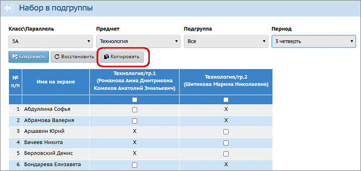
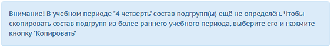
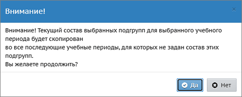

В том случае, если в выбранном учебном периоде ученики разделены по подгруппам, а в следующем учебном периоде - ещё не разделены, система позволяет скопировать состав подгрупп в следующие периоды. Для этого предназначена кнопка Копировать:

Копирование происходит во все последующие учебные периоды, в которых ещё нет разделения на подгруппы.
Если в фильтре Период выбран учебный период, в котором состав подгрупп пустой, - то выводится дополнительная подсказка:

Выберите нужный предмет, период и нажмите кнопку Копировать. Будет выведено окно, в котором нужно будет подтвердить ваше решение:

Особенность копирования состава подгрупп для ИУП-класса Если в фильтре Класс\Параллель выбрана параллель, обучающаяся по индивидуальным учебным планам (такая параллель отмечается звёздочкой в списке), то кнопка Копировать появляется при дополнительном условии: если в последнем фильтре Класс выбрано "Все".